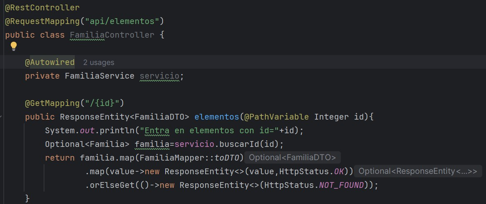
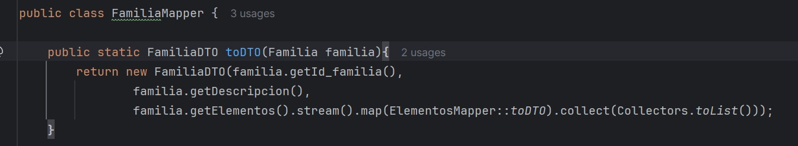
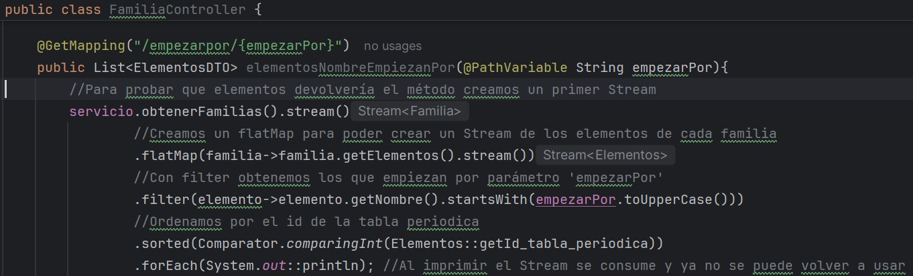
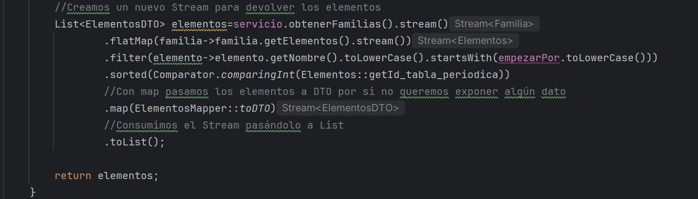

Ejemplo Lambda: Las expresiones lambda de Java 8 son métodos o funciones anónimas
que no necesitan un identificador para ser llamadas y que usan los parámetros, el operador -> y la expresión,
utilizando programación declarativa. En Java 7 utilizamos programación imperativa lo que implica que tenemos que
indicar todos los pasos.
Optional: Optional es una clase que viene en el JDK 1.8 que nos
permite gestionar los errores NullPointerException para reducirlos. Esta clase debe ser usada con cuidado en aplicaciones críticas
por rendimiento ya que consume recursos. Optional puede contener un valor nulo, podemos saber si el objeto de la clase tiene valor
nulo, es decir si está inicializada, por lo que podemos actuar en consecuencia, métodos que conviene conocer:
isPresent(): Nos permite saber si un valor ha sido inicializado
orElse():span> Permite establecer un valor por defecto en caso de que el valor sea nulo. Este método se ejecuta
siempre y solo establece el valor si recibe un nulo
orElseGet(): Se diferencia de orElse() en que solo se ejecuta si el objeto está a nulo
orElseThrow: Podemos lanzar una excepción diferente de NullPointerException si el valor es nulo, por ejemplo
NumberFormatException si el valor que debe tener es numérico.
Ejemplo orElseGet:
Supongamos que queremos obtener los elementos de cada categoría con una aplicación llamando a un API Rest de Spring Boot.
Podemos controlar que nos consulten una categoría inexistente devolviendo un código de error en vez de que la aplicación deje de
funcionar.
H
Li
Na
K
Rb
Cs
Fr
Be
Mg
Ca
Sr
Ba
Ra
Sc
Y
La
Ac
Ti
Zr
Hf
Rf
Ce
Th
V
Nb
Ta
Db
Pr
Pa
Cr
Mo
W
Sg
Nd
U
Mn
Tc
Re
Bh
Pm
Np
Fe
Ru
Os
Hs
Sm
Pu
Co
Rh
Ir
Mt
Eu
Am
Ni
Pd
Pt
Ds
Gd
Cm
Cu
Ag
Au
Rg
Tb
Bk
Zn
Cd
Hg
Cn
Dy
Cf
B
Al
Ga
In
Tl
Nh
Ho
Es
C
Si
Ge
Sn
Pb
Fl
Er
Fm
N
P
As
Sb
Bi
Mc
Tm
Md
O
S
Se
Te
Po
Lv
Yb
No
F
Cl
Br
I
At
Ts
Lu
Lr
He
Ne
Ar
Kr
Xe
Rn
Og
JSON generado por Spring Boot
Cuando se llama a la aplicación de Spring Boot con un endpoint con la url api/elementos/ con el {id} de una categoría
(Ejemplo: http://localhost:8080/api/elementos/4) entra en el Controlador, el cual llama al Servicio que le devuelve un objeto
de la clase Optional que a su vez se obtiene del repositorio. Si este objeto no es nulo se transforma en un objeto DTO para no esponer directamente los datos de la
base de datos y elegir que mostrar, se devuelve en formato JSON. Por el contrario si el objeto es nulo Spring Boot devuelve
un error conocido 404 HttpStatus.NOT_FOUND
Aspecto IDE Intellij IDEA


Ejemplo interfaz funcional y método default: Una interfaz funcional es aquella interfaz que
solamente puede tener un método abstracto y que permite usar expresiones lambda para invocar a dicho método. También permite definir
otros métodos "default" y estáticos, que pueden ser llamados y no tiene porque ser sobrescritos en las clases que implemente el interfaz.
Aspecto IDE Eclipse
Pulse "Run" para ejecutar código
Consola
API Stream: Un Stream es una secuencia de elementos que permite procesar datos
de forma declarativa, ayudan a manipular colecciones mediante operaciones que se dividen entre intermedias y terminales.
Operaciones intermedias: No ejecutan nada por sí solas y describen que querenos hacer por ejemplo filtrar, ordenar,
transformar, limitar, etc., para lo cual crean un nuevo Stream.
Operaciones terminales: Son las operaciones que consumen el Stream y desencadenan la ejecución de las operaciones
intermedias, por ejemplo contar, calcular el valor máximo, recorrer cada elemento, pasar a List, etc.
Importante un Stream solo puede consumirse una vez al ejecutar una operación terminal y cualquier intento de volver a
usarlo provoca una IllegalStateException
Ejemplo API Stream:
Imaginemos que queremos los elementos quimicos que empiezan por una letra o texto que estén ordenados por
id de la tabla periódica, para lo cual accedemos desde el controlador que tenemos para familia de elementos para
no crear un controlador específico para elementos (se podría hacer), le pasamos la url con el valor seleccionado.
Ejemplo http://localhost:8080/api/elementos/empezarpor/a.
Para obtener el resultado realizaremos las siguientes operaciones:
flatMap o mapa plano (Stream Flattening): Es una estructura similar a un mapa
que nos permite trabajar con estructuras anidadas. En este caso nos permite obtener un nuevo Stream con los
elementos de cada familia(alcalinos, metaloides, etc.)
filter: Es un método de la clase Stream que nos permite seleccionar elementos
según una condición. Para este caso filtraremos para obtener los elementos que comiencen por una cadena que
le pasemos, por ejemplo si pasamos la cadena "Co" debería devolver los elementos Cobalto, Cobre y Copernicio
sorted: Ordena los elementos de una lista permitiendo usar Comparator
map: Es una función que permite operar con los elementos de una lista uno a uno.
En este caso lo usamos para transformar cada elemento de la base de datos a DTO para decidir que datos del
elementos se devuelven y cuales no
toList: Método que consume el Stream convirtiéndolo a una lista.


Referencias de Métodos (Method References): Es una forma de llamar a funciones existentes con el operador '::'
como si fueran expresiones lambda pero sin expresar todo el camino
Aspecto IDE Eclipse
Pulse "Run" para ejecutar código
Consola
forEach, removeIf y sort:
forEach: Para recorrer los elementos de
un array en Java 7 podíamos usar un forEach con un for usando el operador '::' de la siguiente manera
for(String s::arrayStrings), en Java8 podemos usar nombreArray.forEach que dentro pide un Consumer
que prácticamente es una interfaz funcional con un único método llamado accept() dentro del cual dentro del cual
recibe una lógica que nosotros implementemos podemos usar una lambda o un método estático con el operador '::'
removeIf: En Java 7 para eliminar una
ocurrencia de un array no podíamos usar un forEach con remove porque se producía excepción
ConcurrentModificationException, por lo que debíamos usar un Iterator y recorrer el array con while. En Java 8
podemos usar menos código usando removeIf con un predicado, es decir con instrucciones que representan una lógica
como eliminación, agregación, condicionales, etc., por lo que vamos a poder usar una lambda que indique si cada
elemento debe borrarse.
sort: En Java 7 para ordenar una lista
tenemos Collections.sort(lista) y si es un objeto tenemos que pasarle un Comparator con la lógica de comparación
para ordenar la lista de elementos. En Java 8 tenemos el método sort de la propia lista de elementos al cual
podemos pasarle una lambda con el criterio de ordenación, por ejemplo lista.sort((x,y)->x.comparteTo(y)).